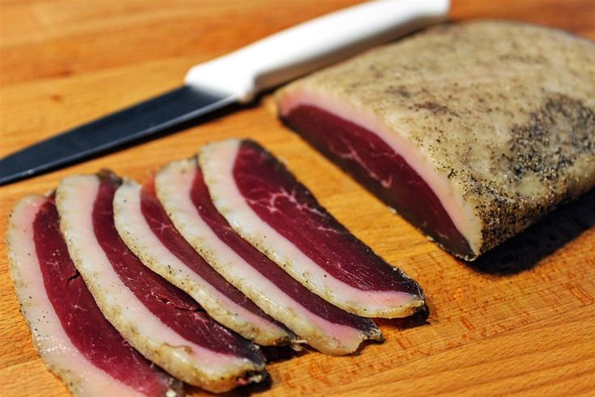

Magret de canard séché

-
Vous pouvez prendre d'autres viandes si vous le souhaitez, c'est le même processus.
Ingrédients :
- 1 magret de canard frais
- 500 g de gros sel (sel de mer ou sel fin de cuisine)
- Poivre noir moulu
- Épices au choix (thym, herbes de Provence, piment d'Espelette, etc.)
Instructions :
- Rince le magret de canard sous l'eau froide et sèche-le bien avec un papier absorbant.
- Retire les petites membranes ou nerfs visibles, mais conserve la couche de gras.
- Verse une couche de gros sel dans un plat suffisamment grand pour accueillir le magret.
- Dépose le magret côté chair vers le haut, puis recouvre-le complètement de gros sel.
- Laisse reposer le magret dans le sel pendant 12 à 24 heures au réfrigérateur (12 h pour une viande
moins salée, 24 h pour un goût plus prononcé).
- Retire le magret du sel et rince-le soigneusement sous l'eau froide pour éliminer tout le sel
restant.
- Séche-le parfaitement avec un papier absorbant.
- Poivre généreusement toute la surface du magret, et ajoute les épices de ton choix. Masse légèrement
pour bien faire pénétrer les arômes.
- Enveloppe le magret dans un torchon propre et sec.
- Place-le dans le bas du réfrigérateur ou dans une cave fraîche (environ 10-12 °C) pendant 2 à 3
semaines.
- Vérifie régulièrement que le torchon reste sec. Si besoin, change-le.
- Une fois le magret séché, tranche-le finement à l'aide d'un couteau bien aiguisé. Il peut se
conserver plusieurs semaines.